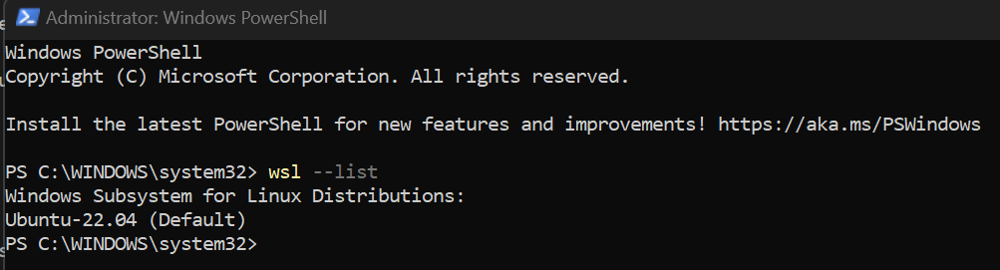

Export/Backup Distribution
Backup Distribution Ubuntu-EVEng
Nous devrions tous effectuer régulièrement des sauvegardes de nos systèmes. En particulier si nous avons personnalisé notre environnement WSL2 avec nos packages et paramètres préférés, kvm, qemu, EVEng. Il peut également être utile de partager cet environnement avec un collègue travaillant sur le même projet.
Note
Gardez à l'esprit que ce processus de sauvegarde peut prendre du temps.
EVE-NG
Pour effectuer une sauvegarde ou exporter une distribution WSL2, suivez ces étapes :
Ouvrir
PowerShell, en tant qu'administrateur.Tapez la commande suivante pour déterminer les distributions Linux disponibles et appuyez sur Entrée :
wsl --list

- Tapons la commande suivante pour créer une
sauvegarde de la distribution WSLet appuyez sur Entrée :
# wsl.exe --export <name of distribution> <filename of exported image>
wsl.exe --export Ubuntu-22.04 C:\WSL\ubuntu-onetech-backup.tar.gz
Veuillons noter qu'il n'y a pas de barre de progression pour suivre l'avancement. pour moi cette processus avec presque 18 GO reste 3 minute.
Note
Pour utiliser cette distribution, n'oubliez pas d'ajouter notre propre noyau pour l'ajouter et également d'installer le module pour Kvm_amd ou Kvm_intel ; C'est aussi simple que d'utiliser quelques commandes et de changer le mot amd en intel ; Du côté du noyau, j'ai ajouté AMD et Intel ; Voir cet article [].
Import Distribution Ubuntu-EVEng
L'importation d'une image s'effectue de la manière suivante :
- Ajouter notre propre noyau (Kernel) dans ce chemin:
"C:\Users\\%USERNAME%\\bzImage".
- Créez un fichier
.wslconfigdans le répertoire"C:\\Users\\%USERNAME%\\.wslconfig"contenant la configuration suivante :
[wsl2]
kernel=C:\\Users\\sella\\bzImage
autoMemoryReclaim=enable
memory=12GB # Voir votre memoire et changer
processors=6 # Voir les coeurs du votre CPU
swap=4GB
swapfile=C:\\wslswap.vhdx
localhostForwarding=true
nestedVirtualization=true
- L'importation d'une image s'effectue de la manière suivante :
wsl.exe --import Ubuntu-EVEng C:\WSL\Ubuntu-WSL\ C:\WSL\ubuntu-onetech-backup.tar.gz --version 2
- Utilisons la commande
wsl -l -vpour vérifier :
wsl -l -v
- Enfin, utilisons la commande
wsl -d Ubuntu-EVEngpour exécuter votre distribution Linux CentOS nouvellement importée.
wsl -d Ubuntu-EVEng
- Par défaut, lorsque nous utilisons
--import, nous démarrons toujours en tant qu'utilisateurroot. Nous pouvons créer notre propre compteutilisateur, à l'aide de ces commandes :
wsl -d Ubuntu-EVEng
sudo apt update && sudo apt install sudo -y
sudo adduser <nom_utilisateur>
sudo usermod -aG sudo <nom_utilisateur>
echo -e "[user]\ndefault=<nom_utilisateur>" | sudo tee -a /etc/wsl.conf
- Nous devons maintenant
quittercette instance et nous assurer que toutes les instances WSL sont terminées.
wsl --terminate Ubuntu-EVEng
- Redémarrons notre distribution pour voir notre nouvel utilisateur par défaut en exécutant cette commande :
# [nom_utilisateur@hostname]$
wsl -d Ubuntu-EVEng
| Software | Path | OS |
|---|---|---|
| Notre Kernel Linux | - C:\Users\%USERNAME%\bzImage | Windows |
| .wslconfig | - C:\Users\%USERNAME%\.wslconfig | Windows |
| Image EVEng Qemu | - /home/msauto/EVE-COM-5.0.1-19/EVEms.qcom2 | Linux |
| EVEms2023-clone | - /home/msauto/EVE-COM-5.0.1-19/EVEms-clone.qcow2 | Linux |
| Linux Client Side | - /home/msauto/eve-ng-integration | Linux |
| WSL2-Linux-Kernel | - /home/msauto/WSL2-Linux-Kernel | Linux |